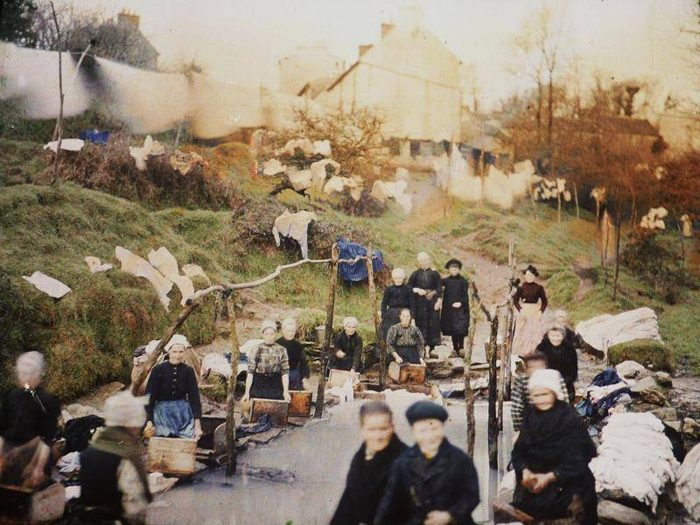
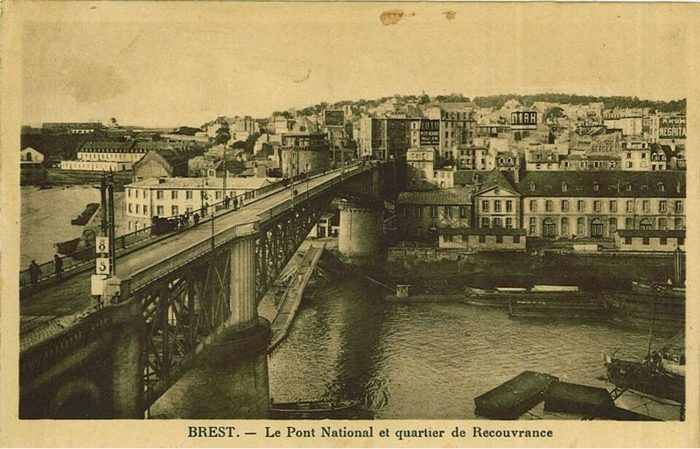
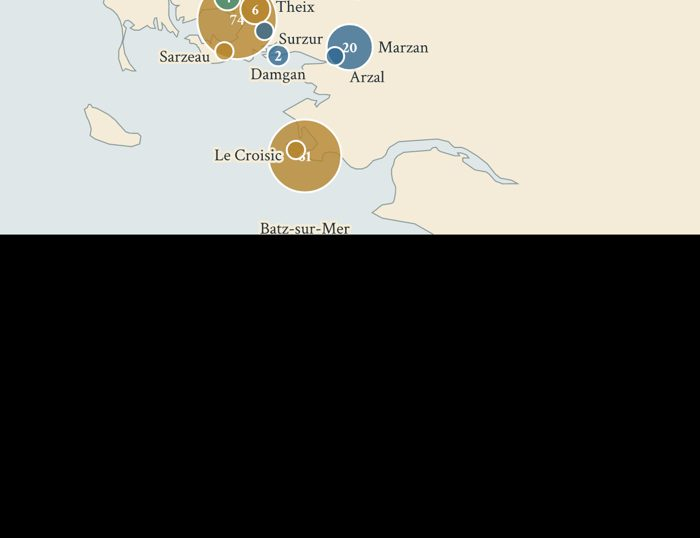
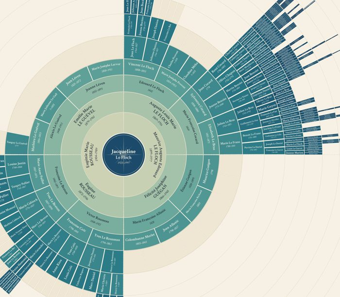

Les gens de mer de Marie Françoise
Une enquête généalogique offerte pour ses 76 ans : quatre siècles de paludiers, de marins, de douaniers et d’ouvriers du port, du golfe du Morbihan à la rade de Brest.

Le carnet
L’enquête complète : les personnages, les métiers, les lieux, l’Histoire, et les pistes pour continuer.

Le jeu de piste
Onze étapes en Bretagne, de Batz à Brest, pour retrouver un mot mystère.

La carte
Où sont nés et ont vécu les 322 ancêtres retrouvés, et un curseur pour remonter le temps.

La roue
Tous les ancêtres de Jacqueline réunis dans une rosace, à explorer en zoomant.